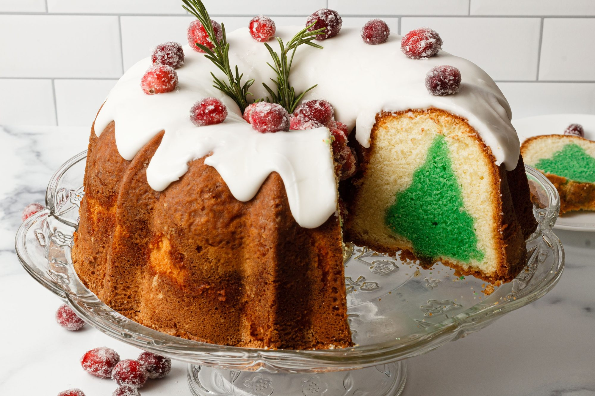

Honey Glazed Ham

Description
This recipe elevates the beloved traditional pound cake with a modern twist
that will surprise and delight your holiday guests. Classic pound cake is
baked in a fluted Bundt pan giving it that quintessential holiday glam —
but the best part is the mini Christmas trees hidden in each slice.
Ingredients
- Pound cake recipe (2 separate batches: one tinted green
and one untinted)
- Green food coloring
- 2 loaf pans (I used 8½ x 4½ x 2½)
- Cooling rack
- Christmas tree cookie cutter (should be shorter than Bundt cake pan)
- Baking sheet
- 1 fluted Bundt cake pan
- Spatula for spreading batter
- Icing recipe
- Zip-top bag or piping bag with large round tip
- Sugared cranberries (optional decoration)
- Sage leaves or rosemary sprigs (optional decoration)
Steps
- Preheat oven to 325 degrees F (165 degrees C).
- Pour water, star anise, and cloves into the bottom of a roasting pan.
Place a roasting rack into the pan over the water, anise, and cloves;
place ham on rack. Cut 1/4-inch deep slashes 1/2-inch apart lengthwise
and crosswise across the top of the entire ham.
- Bake ham in the preheated oven for 20 minutes. Whisk brown sugar, honey,
mustard, vinegar, black pepper, Worcestershire sauce, and cayenne pepper
together in a bowl until glaze has a thick, smooth consistency.
- Brush glaze all over ham. Continue baking ham, brushing glaze on every 20
minutes, until glaze is deep golden and ham is heated through, about 2
hours 10 minutes. An instant-read thermometer inserted into the center
should read 130 degrees F (54 degrees C).
- Use a kitchen torch to heat the glaze on the ham until it is crispy
and caramelized, 2 to 5 minutes.